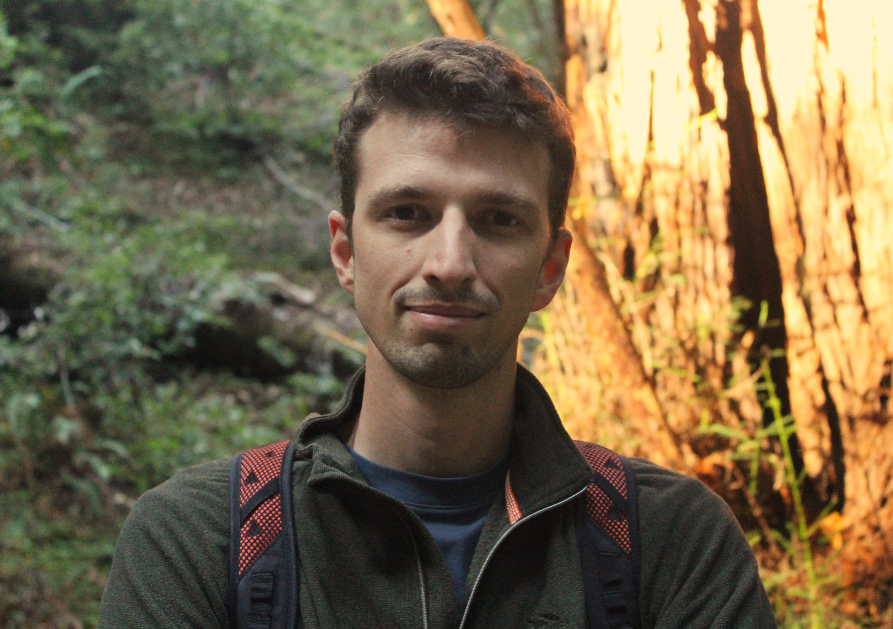

Riccardo Norbiato

Welcome! I am a Post-Doctoral scholar at the Paris School of Economics and affiliated researcher at the International Tax Observatory and i-MIP. PhD at CREST (Ecole polytechnique). I visited UC Berkeley ARE in 2023.
My research lies at the intersection of international trade, environmental and agricultural economics, with a focus on the role of global value chains.
Curriculum vitae: click here
Email: riccardo.norbiato@psemail.eu
Institutional: website
Social: twitter